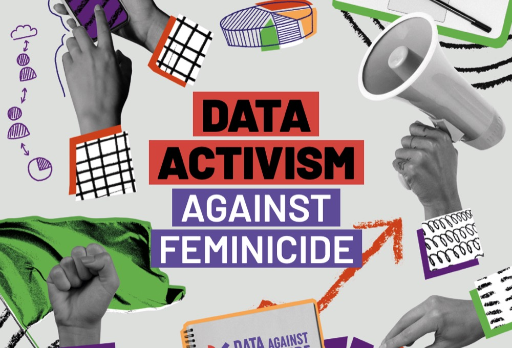
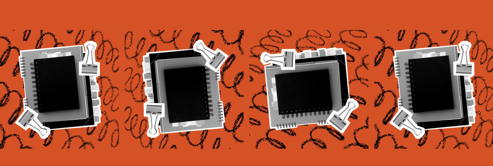
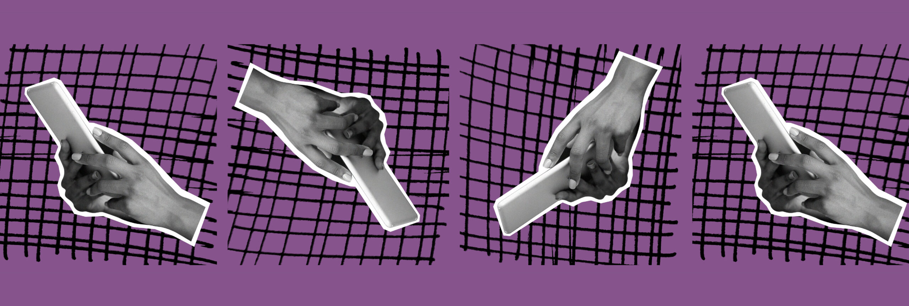

Visual Analysis
Precedent Study — datoscontrafeminicidio.net
Landing Page
The organization's own site opens on a hero banner that mixes flat color-blocking with a black-and-white photo collage — documentary-style portraits of activists at work, cut out and layered over hand-drawn scribble accents and everyday objects (books, a megaphone, a calculator, binder clips). It reads closer to a protest zine than a corporate nonprofit template.



Layout Notes
- Header — white bar, logo mark top-left, horizontal text nav (About, Tools, Publications, Community, Course, Glossary, Contact), a search field, and a language dropdown, right-aligned.
- Hero — two-tone diagonal color-block background (warm orange field on the left, deep violet on the right) beneath the photo collage, with a bold white headline, two short paragraphs of body copy, and a pill-shaped outlined "See more" button.
- Imagery — black-and-white documentary photography, collaged rather than used as clean stock photos, echoing grassroots/protest visual culture instead of institutional polish.
- Typography — a heavy, rounded sans-serif for headlines; a lighter sans for body copy and navigation.
Palette
Sampled by eye from the hero banner and campaign graphics above — treat as close approximations rather than exact pixel values.
Primary brand colors
Accent colors
Neutrals
Note — This palette belongs to the organization's own site, not ours. Our Precedent Study site intentionally uses a different, single-accent pink system rather than adopting it directly.